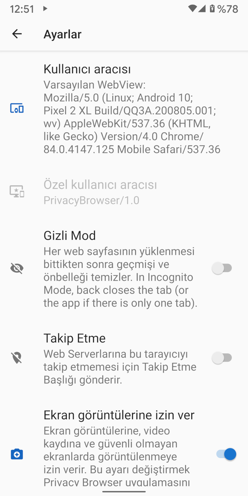

Web tarayıcıları web sitelerine bağlandığında, sitelere, tarayıcıyı ve sahip olduğu oluşturma (render) özelliklerini belirten bir kullanıcı aracısı gönderir. Web sunucusu, bu bilgiyi web sitesinin hangi versiyonunun tarayıcıya gönderileceğini karar vermek için kullanabilir. Örneğin, birçok web sitesinin masaüstü ve mobil tarayıcılar için farklı versiyonları vardır.
Clear Browser, varsayılan olarak, kendi özel kullanıcı aracısı olan ClearBrowser/1.0 kullanır. Bu, web sunucusuna minimum düzeyde bilgi gönderir.
Çünkü web sunucuları bunu bir mobil kullanıcı aracısı olarak tanımlayamadıkları için genellikle sitenin masaüstü versiyonunu gösterir.
Buna kıyasla, WebView’ın varsayılan kullanıcı aracısı cihazın donanımı ve yazılımı hakkında büyük miktarda bilgiyi ortaya döker. Ayarlar ekranında, Kullanıcı Aracısı olarak Varsayılan WebView seçmek gönderilecek kullanıcı aracısını gösterir. Aşağıdaki ekran görüntüsü, Android 10 çalıştıran ve Android System WebView 84.0.4147.125 sürümüne sahip bir Pixel 2 XL cihazına aittir. Çoğu web sunucusu, bunu bir mobil tarayıcı olarak tanıyacak ve eğer varsa, sitenin mobil versiyonunu gösterecektir.
Kullanıcı aracısında, bir web sitesini ziyaret eden birkaç kişinin aynı olacağı hakkında yeterli bilgi bazen vardır. Eğer kullanıcı aracısı başka bir özgün olmayan tanımlayıcı bilgi ile birleştirilirse, genellikle özgün fingerprint (tanı) oluşturulur. The Electronic Frontier Foundation, bu kaynaklardan ne kadar bilgi toplandığını göstermek için Panopticlick adlı bir araç geliştirdi. Bu test JavaScript etkinken çalıştırıldığında, ortaya çıkarılan bilgi miktarı büyük ölçüde artar. Ayrıca Browser Leaks ve Am I Unique bu konuda iyi bilgi kaynaklarıdır.

Ortak tarayıcılar ve işletim sistemleriyle eşleşen önayarlı birkaç kullanıcı aracısı vardır.
Browser Fingerprinting (Tarayıcı Tanılama) amaçları doğrultusunda, nadir olan herhangi bir şeyin takibi kolaylaşır.
Eğer Clear Browser yaygınlaşırsa ve birçok insan kullanıcı aracısı olarak ClearBrowser/1.0 kullanırsa, gizlilik için iyi bir seçim olacaktır.
Firefox ve Chrome en yaygın kullanıcı aracılarıdır, ancak çok sık otomatik güncelleme aldıkları ve versiyon numaraları çok hızlı değiştiği için Clear Browser’a dahil olan kullanıcı aracıları,
sunucu günlüklerinde yer alan kullanıcı aracılarının büyük çoğunluğu içinde gözden kaçacaktır.
Bazı web siteleri, kullanıcı aracısını tanımazlarsa düzgün çalışmaz. Kullanıcı aracısı olarak Varsayılan WebView ayarlamak veya genel olarak tanınan bir kullanıcı aracısı ayarlamak için domain ayarlarını kullanmak genellikle problemi çözer. Android WebView’ı kullanıcı aracısının boş olmasına izin vermez. Eğer öyleyse, WebView, sunucuya varsayılan kullanıcı aracısını gönderir.